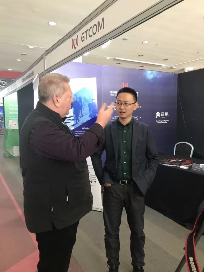

Media Source:GTCOMDate: 8 August 2017views:267

To the uninitiated, Interpreters and Translation services can seem like a bit of a secret art, for business and entertainment purposes only. A website being translated from a foreign language to English, a UN translator interpreting a conversation seems hardly life changing. However, translations in a court case working around court room legalese in a foreign language to the defendant can leave lives in the balance even in Australia where there are 250 Aboriginal languages. In Australia and Globally, up till now much if this has all been done with little use of technology to help, and can take years of training and mastering due to the complexity of it all. The theme at the 21stand 2017FITCongress, International Federation of Translators (Fédération Internationale des Traducteurs) or FIT, 3-5 August is Disruption and Diversification.
As technology evolves with cloud computing, artificial intelligence, (AI), machine learning, big data, and even in the future more quantum computing and VR use on the horizon, the use of technology has moved at an amazingly fast pace. However, having a way of managing the data and technology to make the best use of all of this requires special skills from a company with the pedigree and a best of breed vision on the way forward.
No better Company is showing this proof than Global Tone Communication Technology Co., LTD – (GTCOM) The man with the vision is CEO Eric Yu. I had the opportunity to visit and chat with Eric Yu to talk about this and much more.
TNTV: Hello Eric nice to meet you and thank you for having the time to talk. How did this all begin for you?
Eric Yu: After my dream to be a translator, I worked with the Beijing Olympics as a translator for the athletes. We then got our first call centre and could accumulate a lot of data that the company has already accumulated over 40 years.
TNTV: How does that impact translation technology.
Eric Yu: – All data is good data but some is “weighted” with different values of importance. Combining this with AI, speech recognition and deep learning technology and open source relationships, allows GTCOM to create a best of breed models and predictions.
Eric then shows me some GTCOM live examples on the YEEKITsoftware at their stand on how they can use this technology on what appears simple to view and understand.
Eric Yu: A large part of our focus is “open platform” information, by using all this we can better predict stock trends for instance because of the amount of data being used but managed better and with more value and better predictions. This platform is named “JoveBird” which is a big data solution for intelligent investment. For example, using all this information, (Eric shows me the stock price of a large company on a live map) Days prior to them having a significant share price drop using such things their open source values like, analyst ratings, business activities, financing actions, partnership activity and social media (
For example, using all this information, (Eric shows me the stock price of a large company on a live map) Days prior to them having a significant share price drop using such things their open source values like, analyst ratings, business activities, financing actions, partnership activity and social media (chatter), and even a problem with a popular game, all lead to us being able to predict the share drop very accurately offering not just a view of predicting share price but also share sentiment (how bullish or bearish the stock is) . All this data using “events” like product service, revenues, employment actions, credit ratings, assets etc, and all able to be viewed on the level of relevance, using machine learning, cloud, and big data better and more efficiently using more levels across languages. This allows more accurate analysis not based just on stock trends.
TNTV: Can you tell me a little more about YEESolutions as a Product?
Eric: YEEKIT has 4 types of accounts Standard, advanced, business and customised all offering different features, from cloud storage to industry specific categories. Predefined or user defined.
TNTV: Can you give me a view of how much data we are talking about and how you’re thinking about the transition from Big Data to AI.
Eric: For instance, I thought, what if we took google just as 1 example. We could capture every google item, and every keyword, not just English by all the major languages not labeling just as a language but all the major languages. The power of this was highlighted when Google announced a move to (neural machine translation) (NMT) moving from SMT (statistical methods) a milestone in machine translation.
TNTV: But it is not about replacing people
Eric: – No it is about giving the people better data able to be used more effectively.
TNTV: – SO congratulations, Eric, GTCOM is a relatively new but very exciting innovative leader in machine translation, big data, and artificial intelligence, can you discuss some of the target clients
Eric Yu: – There are many examples, governments from a security perspective may want to better monitor issues like terrorism, stock predictions, and our customers already include Amazon, Alibaba, and others.
TNTV: How all this work together for a solution as I see GTCOM products are divided into 3 branches, language technological ecology, platform & big data technology.
Eric: The products of GTCOM generally have classified into two categories: YeeCloud & YeeSight. YeeCloud is more likely to focus on language translation, which targets the market of language service. YeeSight provides a comprehensive and cross-language, big data service. YEEKIT is the language technological platform which can be regarded as a computer aided translation tool. It is part of YeeCloud ecology.
TNTV: GTCOM is a leader in Machine Translation. What makes it stand out?
Eric: While some companies will spend billions on building their services, we use many open source technologies, combined with the history of 40 years of data gives a better data, form a more diverse source of data being open.
TNTV: GTCOM was a founding part of the LBDA – Language Big Data Alliance – Can you explain a little about the importance of the LBDA？
Eric: Again, the benefit goes both ways, established by government departments, working on enterprises and public institutions, colleges and universities, and scientific research institutions for promoting the mutual application and sharing of language big data for the mutual application and sharing of language big data and related technological resources in the fields of teaching, research and more.
TNTV: GTCOM is working with many including Australia and New Zealand on MT (machine translation) and AI, can you talk a little about the time frame of this exciting work, and what the expected outcomes are?
Eric: Universities again are benefiting from the Open platform offering new technologies and solutions that would not be seen otherwise. In the case of UNSW, they have advanced project based learning, real clients of their own, and new curriculum, new degrees in translation, and interpreting addressing MT and able to lead in research in Language technologies. This means as we are using open source they also are moving towards VR, AR, Big Data and best practice using YEEKIT, YeeSight, etc.
TNTV: YeeSight and YeeCloud have won multiple awards for innovation, in big data and AI – what do you see the next big advances, even smarter AI?
Eric: Yes, better AI, quantum computers technology is on the horizon, as is VR elements to allow it all to work better with the cloud.
TNTV: How is GTCOM able to maintain this momentum of change to stay ahead, is it in R&D or do you see the need for improvement able to slow down? – For example, we saw this recently with mobile phones and even computers, where the speed of improvements was improving dramatically year after year, (Moore’s Law) but the PC market has flattened, some mobile phone companies are feeling this problem also.
Eric: It is a balance, again due to the open platform things evolving do so from many directions. Sometimes the software is ahead of the platforms used, sometimes it is the other way around, but it all must equal a good user experience.
TNTV: What is next for GTCOM?
Eric: We are currently working towards an IPO soon .
TNTV: Congratulations, very exciting times, thank you for your time Mr. Eric Yu.